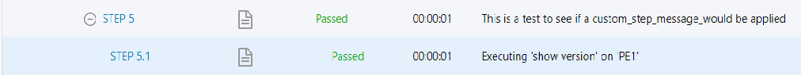

Customizing steps log messages
In blitz all the steps message are fully customizable. This allows test engineers to not only develop their testscript but also, be able to make the output more clear for themselves. Three different keywords can be used within the body of the action that could customize each step message.
Example-1: Customizing starting step message
By specifying keyword custom_start_step_message as part of the action the starting step message
will be customized.
- execute:
command: show version
device: PE1
custom_start_step_message: My own message instead of the default one
timeout: 100
as shown in the image you can see how in the logs the starting message is customized.
{kind=link}
Example-2: Customizing substeps
By specifying keyword custom_substep_message as well as custom_verification_message
the substeps would be customized as well. custom_verification_message will be only useful
if verification on action outputs are being done (using include/exclude)
- execute:
custom_substep_message: first test
custom_verification_message: second test
command: show version
device: N93_3
include:
- "\d"
as shown in the image you can see how in the logs the starting message is customized.
{kind=link}
Example-3: Customizing substeps of a loop advanced action
- loop:
loop_variable_name: name1
range: 12
custom_substep_message: Applying custom_substep_message to substeps of a loop
actions:
- execute:
custom_verification_message: second test
command: show version
device: N93_3
include:
- "\d"